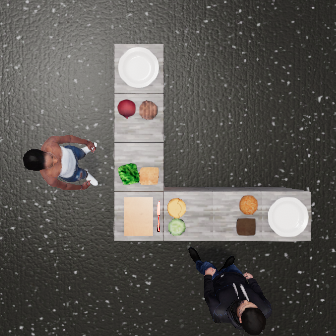
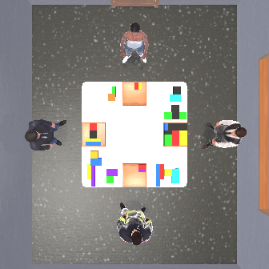

1 University of Massachusetts Amherst2 Tsinghua University3 Peking University4 University of Michigan5 Johns Hopkins University6 Honda Research Institute USA7 MIT
In this work, we investigate the problem of embodied multi-agent cooperation, where decentralized agents must cooperate given only partial egocentric views of the world. To effectively plan in this setting, in contrast to learning world dynamics in a single-agent scenario, we must simulate world dynamics conditioned on an arbitrary number of agents' actions given only partial egocentric visual observations of the world. To address this issue of partial observability, we first train generative models to estimate the overall world state given partial egocentric observations. To enable accurate simulation of multiple sets of actions on this world state, we then propose to learn a compositional world model for multi-agent cooperation by factorizing the naturally composable joint actions of multiple agents and compositionally generating the video. By leveraging this compositional world model, in combination with Vision Language Models to infer the actions of other agents, we can use a tree search procedure to integrate these modules and facilitate online cooperative planning. To evaluate the efficacy of our methods, we create two challenging embodied multi-agent long-horizon cooperation tasks using the ThreeDWorld simulator and conduct experiments with 2-4 agents. The results show our compositional world model is effective and the framework enables the embodied agents to cooperate efficiently with different agents across various tasks and an arbitrary number of agents, showing the promising future of our proposed framework. Our codes and models are open source and will be released upon acceptance.
How to build a world model for multi-agent cooperation?
We propose COMBO, a novel Compositional wOrld Model-based emBOdied multi-agent planning framework, shown in the figure below.
After receiving the egocentric observations during the last execution step, COMBO first estimates the overall world state to plan on. COMBO then utilizes Vision Language Models to act as an Action Proposer to propose possible actions, an Intent Tracker to infer other agents' intents, and an Outcome Evaluator to evaluate the different possible outcomes. In combination with the compositional world model to simulate the effect of joint actions on the world state, we use the tree search procedure to integrate these planning sub-modules. COMBO empowers embodied agents to imagine how different plans may affect the world with other agents in the long run and plan cooperatively.
Demo
Here are video demos showing our COMBO agent cooperates well with arbitrary number of
agents to finish the TDW-Cook and TDW-Game tasks.
(a) TDW-Cook
(b) TDW-Game
(c) TDW-Game with 3 agents
Compositional World Model
*All videos are generated by the Compositional World Model.
Inference Results of TDW-Cook
*Totally 54 possible action combinations
Initial Frame:

Initial frame
Generated video
Inference Results of TDW-Game
*Totally 80 possible action combinations
Initial Frame:

Initial frame
Generated video
Citation
@article{zhang2024combo,
title={COMBO: Compositional World Models for Embodied Multi-Agent Cooperation},
author={Hongxin Zhang and Zeyuan Wang and Qiushi Lyu and Zheyuan Zhang and Sunli Chen and Tianmin Shu and Behzad Dariush and Kwonjoon Lee and Yilun Du and Chuang Gan},
journal={arXiv preprint arXiv:2404.10775},
year={2024},
}